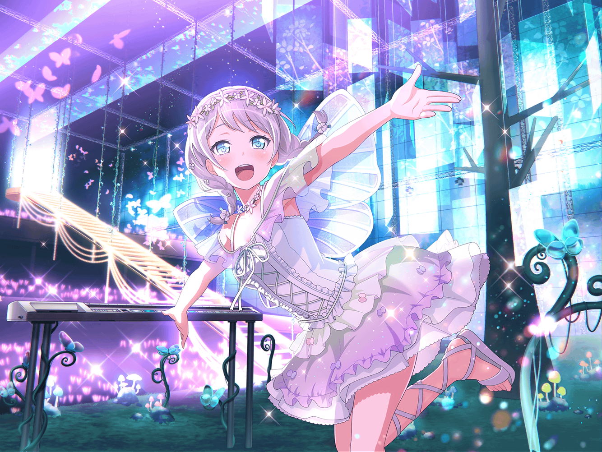

商店街
イヴ
えっと、牛乳とたまごと、あとは……
イヴ
あれ、{{userName}}さん！
お買い物ですか？
イヴ
あっ、そうなんですね！
私も今からスーパーに行くところなんです。
お母さんに頼まれたんですよ！
イヴ
良かったら一緒に行きませんか？
イヴ
……本当ですか？ じゃあ、一緒に行きましょう！
イヴ
お店に着くまで、私の話を聞いてもらってもいいですか？
イヴ
この間、チサトさんの舞台の稽古を観てきたんですけど……
イヴ
そこで驚いた出来事があったんです！
なんだと思いますか？
イヴ
チサトさんが、すごく厳しく演技指導されていたんです！
イヴ
あのチサトさんが、ですよ？
想像できますか？
イヴ
私、チサトさんが注意されるところを見たことがなかったので
びっくりしてしまったんです
イヴ
しかも、私だったらイシュクしてしまうかもしれないなって
思うくらい、厳しいことを言われていて……
イヴ
演出家の先生の意図をくみ取りながら
いい演技をするのは、とても大変だったと思います
イヴ
それでもチサトさんは何度も何度も稽古に取り組んでいました
イヴ
チサトさんからお仕事をやり遂げようっていう気持ちが
伝わってきて、ものすごく応援したくなりました！
イヴ
きっと、チサトさんはいいものを作り上げようという
こだわりが強いんだと思うんです
イヴ
あのこだわりって、芸能のお仕事をするうえで大切ですよね！
イヴ
そういうものが見えるから、
より応援したくなったのかなって思いました
イヴ
いつも私たちを応援してくれるファンのみなさんも
こういう気持ちなのかな、って思います
イヴ
私もお仕事にはいつも真面目に取り組んでいますけど、
チサトさんは私以上だなって思いました
イヴ
きっと、だから演出家の先生は
チサトさんを指名されたんですね！
イヴ
あの姿勢は私も見習わないといけないなって思いました
イヴ
いつか私も、指名でお仕事をいただけるように
なりたいですねっ！
イヴ
今度、チサトさんにお仕事する上で大切にしていることを
聞いてみようと思っています！
イヴ
お仕事をするときにどんなことを心がけているのか、
どういう気持ちで臨んでいるのか……
イヴ
そういうことを聞けたら、
今後のパスパレの活動にも活かせそうですっ
イヴ
チサトさん、どんなことを言ってくれるでしょうね？
イヴ
お話聞くのが楽しみです！
チサトさんがいてくれてよかったです！
イヴ
どうしたら、もっとファンのみなさんを楽しませられるのか、
パスパレのみんなで話し合っていきたいですね！
イヴ
話し合うといえば……あっ、思い出しました！
イヴ
稽古の次の日にカフェに行って、
パスパレのみんなといっぱいお話したんです
イヴ
チサトさんはお仕事のときは冷静で、しっかりしているのに、
カフェで話したときはすごく楽しそうで……
イヴ
チサトさんも私たちと変わらないんだなぁって思いました！
イヴ
なんだか、チサトさんの素顔を見れた気がして、うれしかったです
イヴ
そうそう、チサトさんが
たくさんお話してくれるようになったから、
パスパレのみんなでお話することが増えてきたんですよ
イヴ
前よりみんなとの距離が近くなったように思うんです！
イヴ
初めて知ることがたくさんあって、話すたびに発見があるんです。
すっごく楽しいです！
イヴ
これからもっともっとみなさんと仲良くなって、
セッサタクマしていいパスパレにしていきたいですね！